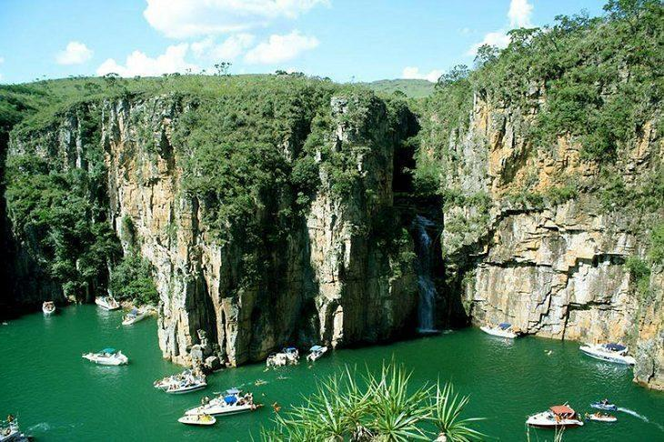
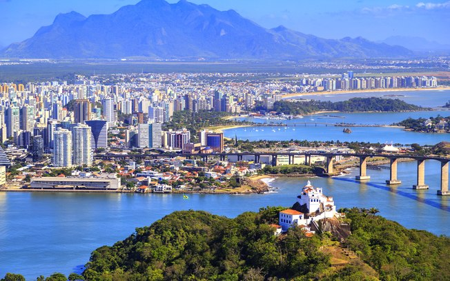

Rio de Janeiro

O Rio de Janeiro é uma grande cidade brasileira à beira-mar, famosa pelas praias de Copacabana e Ipanema, pela estátua de 38 metros de altura do Cristo Redentor, no topo do Corcovado, e pelo Pão de Açúcar, um pico de granito com teleféricos até seu cume. A cidade também é conhecida pelas grandes favelas. O empolgante Carnaval, com carros alegóricos, fantasias extravagantes e sambistas, é considerado o maior do mundo.
Rio de Janeiro
São Paulo
São Paulo, centro financeiro do Brasil, está entre as cidades mais populosas do mundo, com diversas instituições culturais e uma rica tradição arquitetônica. Há prédios simbólicos como a catedral neogótica, o Edifício Martinelli, um arranha-céu inaugurado em 1929, e o Edifício Copan, com suas linhas curvas projetadas pelo arquiteto modernista Oscar Niemeyer. A igreja em estilo colonial do Pátio do Colégio marca o local onde os padres jesuítas fundaram a cidade em 1554.
São Paulo
Minas Gerais

Minas Gerais, um grande estado continental no sudeste do Brasil, é conhecido por cidades da era colonial que remetem à corrida do ouro no país no século 18. Entre elas estão São João del Rei, Tiradentes e Ouro Preto, a antiga capital, todas com ruas de paralelepípedo, mansões ornamentadas e igrejas barrocas decoradas pelo escultor Aleijadinho.O famoso trem a vapor Maria Fumaça liga Tiradentes a São João del Rei.
Minas Gerais
Espirito Santo

O Espírito Santo, estado da região Sudeste do Brasil, é conhecido por suas praias tropicais e áreas naturais montanhosas preservadas. Fundada em 1551, Vitória, capital e cidade portuária, tem um pequeno centro da era colonial. Do outro lado da estreita baía de Vitória, fica Vila Velha, com a movimentada Praia da Costa e o Convento da Penha, construção do século XVI que fica no alto de um penhasco e oferece uma vista panorâmica.
Espirito Santo